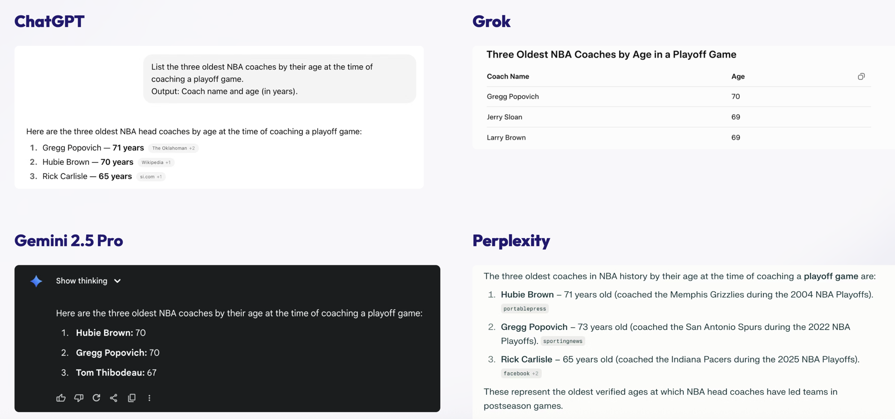

"Who is the oldest coach who managed an NBA playoff game?"one prompt · four models

ChatGPTPopovich71
GrokPopovich70
GeminiHubie Brown70
PerplexityHubie Brown71…then lists Popovich at 73 as #2
"Oldest" hides several records; each model picked one, confidently. Training "rewards guessing over acknowledging uncertainty."